| move object(bewege Objekt) |  |
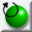 | rotate object (rotiere Objekt) |
| resize object (ändere die Größe) | 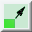 | 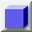 | generiere Box (create box) |
| create sphere(generiere Kugel) | 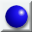 | 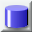 | create cylinder (generiere Zylinder) |
| create spline mesh (generiere Spline-Netz) | 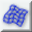 | 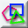 | create polygon (generiere Polygon) |
| create camera (generiere Kamera) | 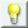 | create lightsource (generiere Lichtquelle) | |
| create interpolated curve (generiere interpolierte Kurve) | 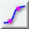 | 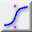 | create approximated curve (generiere angenäherte Kurve) |
| move view (bewege Ansicht) | 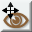 | rotate view (rotiere Ansicht) |
'bewege Objekt' (move object) Tool 'bewege Objekt' (move object) Tool. Halte die Feststelltaste gedrückt um nur orthogonal zu bewegen, move object Tool und das rotate object Tool benutzt oder mit der Layout object Menuoption. Die Kamera ist ein Objekt wie jedes andere. Eine gute Position könnte ein Ort sein von dem man die obere und zwei weitere Seiten des Objektes sehen kann.
Als nächstes sollten wir die Szene beleuchten. Wie man sehen kann existiert schon eine Lichtquelle in der Szene, Light 1. Die Lichtquelle sollte so positioniert werden, daß die Seite des Objekts welches wir ansehen beleuchtet wird. Light 1 ist vielleicht nicht richtig positiniert, je nachdem wo die Kamera sich befindet. Da die Lichtquelle außerdem noch weit entfernt ist, löschen wir sie und generieren eine neue. AoI unterstützt drei Arten von Lichtquellen: punktuelles Licht, gerichtetes Licht und Spotlights. Wir benutzen die einfachste Form: punktuelles Licht. Führe folgende Schritte aus um die Szene korrekt zu beleuchten: